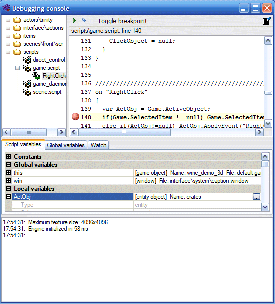

The debugging console can be used to inspect scripts while running the game. The console displays all currently running scripts and the values of all global variables and script variables. Additionally it displays WME log.

The developer can set so-called "breakpoints". Breakpoints are marked script lines, which can break game execution and bring the debugging console window into foreground. So set a breakpoint, select a script in debugging console. Then select the script line and press the "Toggle breakpoint" button (or press F9). A red dot will appear beside the line. Now, whenever the engine executes given line, it pauses the game and displays the debugging console. To continue script execution, switch back to the game window or press the Escape key in debugging console.
Similarly you can remove existing breakpoints by selecting an existing breakpoint line and pressing the "Toggle breakpoint" button or F9 key.
You can also use the "Step" button (or F10 key) to trace a script line by line. Please note that thanks to a multithreaded nature of game programming, tracing scripts which rely on other running scripts can slightly change the game behavior, because the scripts are executed in different order than without tracing.
To stop tracing, press the "Continue" button (or the F5 key).
You can enable or disable the debugging console in project settings in ProjectMan. In the "Debug" section there is "Debugging console" item, which can be assigned following values:
In addition to these breakpoints, you can explicitly call the Debug() function from your script, which has the same effect. That way you can script conditional breakpoints.
In addition to all global variables and all variables of a selected script, you can set your own "watches", that is only variables that interest you. To add a watch, select the "Watch" tab, right-click the tab pane and select "Add watch". Then type the name of the variable you want to watch. To remove a watch, right-click the variable name and select "Remove watch".
Note that the console is only displayed if the debug mode is enabled.
WME Debugging Console requires Microsoft .NET Framework 2.0.